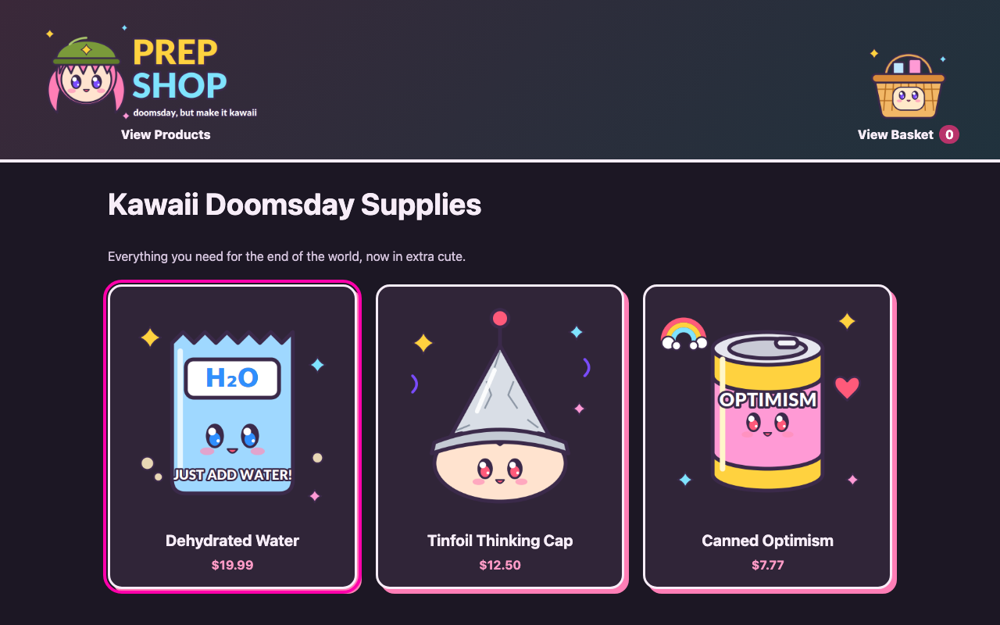
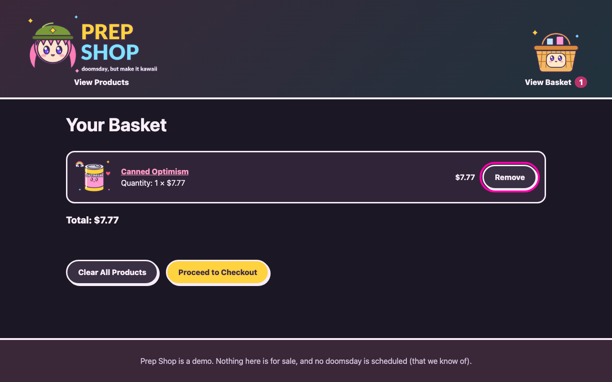
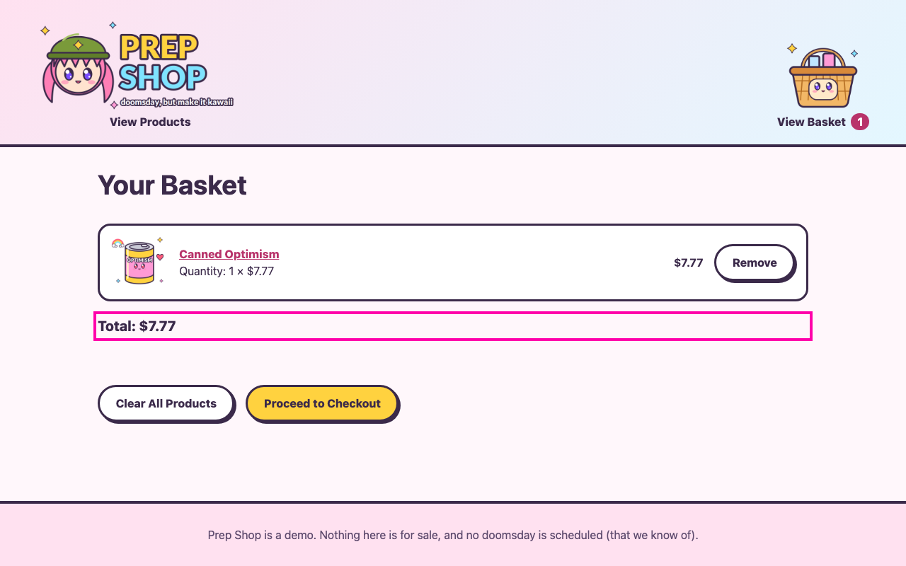
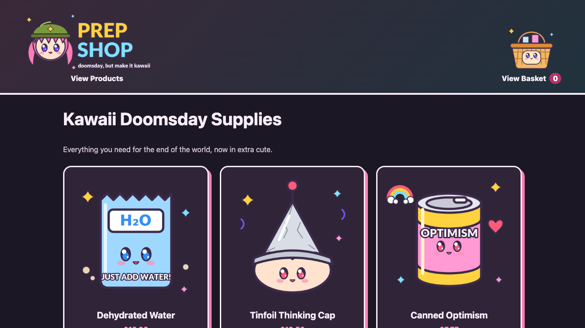
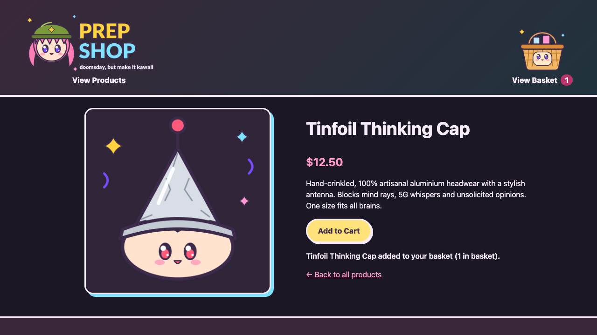
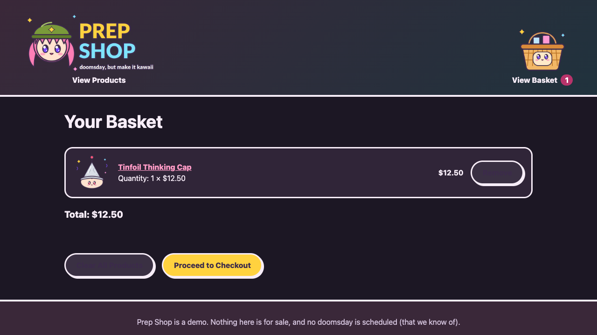
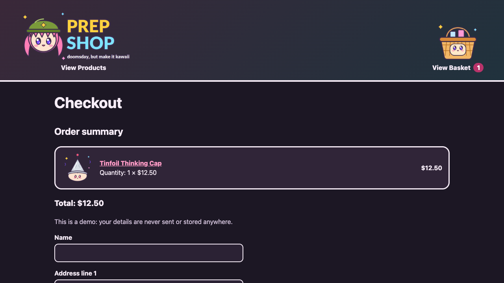
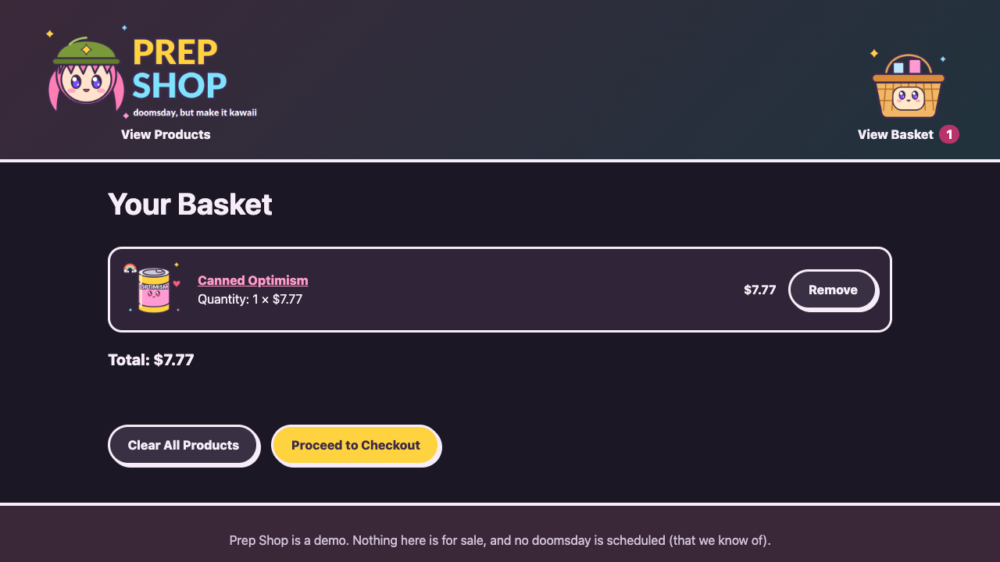
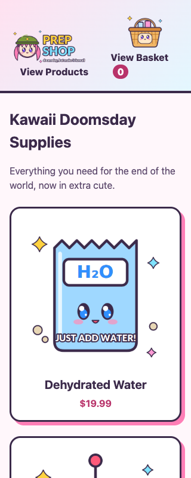
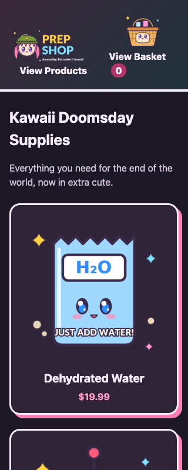

Test report – Ticket #5: Add dark mode to shop
| Item | Value |
|---|---|
| Ticket | #5 |
| Ticket status | todo |
| Ticket last updated | 2026-10-24T18:39:20.344Z |
| Verdict | ✅ PASSED |
1. Summary
- All acceptance criteria passed, all automated scenarios passed and no findings are open.
| Area | Passed | Passed with issues | Failed | Not covered / skipped | Total |
|---|---|---|---|---|---|
| Acceptance criteria | 2 | 0 | 0 | 0 | 2 |
| Automated scenarios – this ticket | 3 | 0 | 0 | 0 | 3 |
| Automated scenarios – regression | 9 | 0 | 0 | 0 | 9 |
| Exploratory sessions | 2 | 0 | 0 | 0 | 2 |
| Findings | critical | high | medium | low |
|---|---|---|---|---|
| Open | 0 | 0 | 0 | 0 |
| Fixed | 0 | 0 | 1 | 0 |
| Accepted | 0 | 0 | 0 | 0 |
2. Goal and scope
Goal: Shoppers see a dark appearance when their device prefers it, while the existing light appearance and shop functionality remain unchanged.
Affected areas:
- README.md
- style.css
- tests/e2e/features/tickets/ticket-5-add-dark-mode-to-shop.feature
- tests/e2e/steps/dark-mode.steps.js
Out of scope:
- A manual theme toggle or saved theme preference
- Changes to shop content, products, basket, or checkout behavior
3. Clarifications and decisions
| ID | Topic | Decision | Source | Evidence |
|---|---|---|---|---|
| D1 | Dark mode activation | Automatically follow the device's dark color-scheme preference; do not add a manual toggle. | 🙋 Asked | Asked how shoppers should activate dark mode; user selected automatic device preference. |
| D2 | Scope of the color treatment | Apply the dark appearance across the shared shop pages while keeping the existing default/light colors intact. | 🔎 Derived | Ticket AC2 requires no changes to light mode; all shop pages share style.css, and copilot-instructions.md requires preserving existing behavior and accessibility. |
4. Acceptance criteria
| AC | Criterion | Risk | Automated | Exploratory | Findings | Status |
|---|---|---|---|---|---|---|
| AC1 | When the device prefers dark color scheme, every shop page uses a dark appearance with readable text, surfaces, links and controls. | high | 2/2 passed | S1 | F1 (fixed) | ✅ Passed |
| AC2 | When the device prefers light color scheme or has no dark preference, the existing light appearance remains unchanged, and existing shop functionality continues to work. | high | 1/1 passed | S1, S2 | None | ✅ Passed |
5. Automated scenarios – this ticket
| # | Feature | Scenario | AC | Risk | Result |
|---|---|---|---|---|---|
| 1 | Dark appearance | The shop uses a dark appearance when my device prefers dark | AC1 | high | ✅ passed |
| 2 | Dark appearance | Secondary basket controls remain readable in dark appearance | AC1 | high | ✅ passed |
| 3 | Dark appearance | The shop keeps its light appearance and shopping still works | AC2 | high | ✅ passed |
Proof – screenshots
1. The shop uses a dark appearance when my device prefers dark – ✅ passed

2. Secondary basket controls remain readable in dark appearance – ✅ passed

3. The shop keeps its light appearance and shopping still works – ✅ passed

6. Regression – existing scenarios
| Feature file | Passed | Failed | Flaky | Skipped |
|---|---|---|---|---|
| tests/e2e/features/baseline/checkout.feature | 4 | 0 | 0 | 0 |
| tests/e2e/features/baseline/shopping-basket.feature | 5 | 0 | 0 | 0 |
7. Exploratory testing sessions
S1 – Explore the dark appearance across product, basket and checkout pages with preference, consistency, keyboard and assistive-technology checks to discover unreadable surfaces or regressions.
| Field | Value |
|---|---|
| Status | ✅ completed |
| Acceptance criteria | AC1, AC2 |
| Heuristics | Preferences, Consistency, Keyboard only, Assistive tech |
| Environments | Chromium 1280x720, dark color scheme |
| Findings | F1 |
Notes:
- Product listing, product details, basket and checkout all used the dark page, header, card and form colors.
- Keyboard focus reached the skip link, and the accessibility snapshot retained the expected page headings, links, controls and status messages.
- Adding Tinfoil Thinking Cap updated the basket count and live status; basket total was $12.50; checkout completed and cleared the basket.
- The first dark basket view showed low-contrast secondary button labels. After the fix, the labels were light on the dark button surfaces.
- No browser console errors were reported on the visited pages.
Evidence:
- docs/tickets/5/screenshots/S1-01-dark-home.png
- docs/tickets/5/screenshots/S1-02-dark-product.png
- docs/tickets/5/screenshots/S1-03-dark-basket.png
- docs/tickets/5/screenshots/S1-04-dark-checkout.png
- docs/tickets/5/screenshots/S1-05-dark-basket-controls-fixed.png







S2 – Explore the unchanged light appearance and mobile layout with light and dark device preferences to discover unintended light-mode or narrow-screen changes.
| Field | Value |
|---|---|
| Status | ✅ completed |
| Acceptance criteria | AC2 |
| Heuristics | Goldilocks, Preferences, Interrupt |
| Environments | Chromium 320x800, light color scheme, Chromium 320x800, dark color scheme |
| Findings | None |
Notes:
- At 320px wide, the product listing remained within the viewport without visible horizontal overflow.
- The light preference retained the original pink-blue header gradient, light page background and white product cards.
- Changing the emulated preference from light to dark updated the page colors without reloading.
Evidence:




8. Findings
| ID | Severity | Status | AC | Session | Title |
|---|---|---|---|---|---|
| F1 | medium | fixed | AC1 | S1 | Secondary basket button labels lacked contrast in dark appearance |
F1 – Secondary basket button labels lacked contrast in dark appearance
Steps to reproduce:
- Set the device color scheme to dark.
- Add a product and open the basket.
- Inspect the Remove and Clear All Products controls.
Expected: Secondary button labels remain readable against their dark surfaces.
Actual: The secondary button text used the dark primary-button text color and was difficult to read against the dark surface.
Resolution: Set secondary button text to the theme ink color, which is light in dark mode and unchanged in light mode. Retested with a targeted E2E assertion and a Playwright CLI basket check; the labels are readable and the page reports no console errors.
Evidence: docs/tickets/5/screenshots/S1-03-dark-basket.png, docs/tickets/5/screenshots/S1-05-dark-basket-controls-fixed.png
9. Residual risks
- Not explored: Non-Chromium browser rendering and native scrollbar appearance.
10. Artifacts
- docs/tickets/5/ticket.json
- docs/tickets/5/requirements.json
- docs/tickets/5/exploratory.json
- tests/e2e/features/tickets/ticket-5-add-dark-mode-to-shop.feature
- docs/tickets/5/proof
- docs/tickets/5/report.html
Generated by .github/skills/test-report/scripts/generate-report.mjs. Do not edit by hand; re-run the script instead.